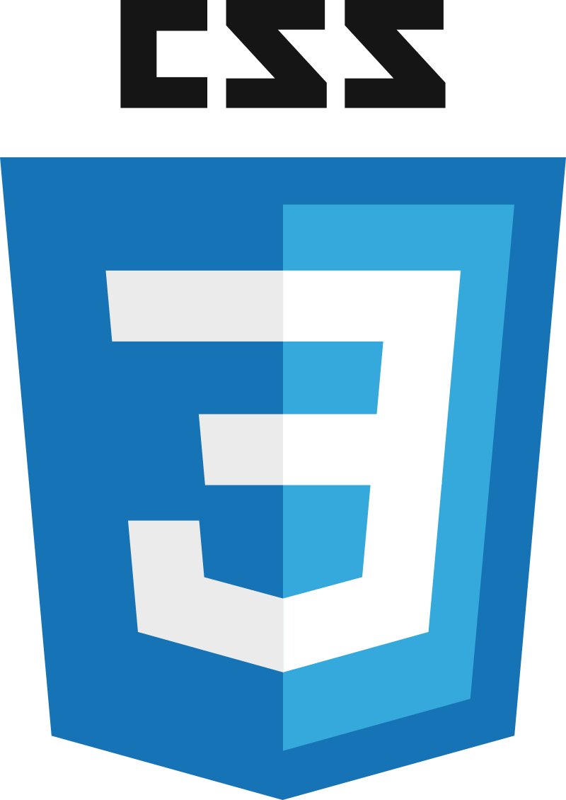
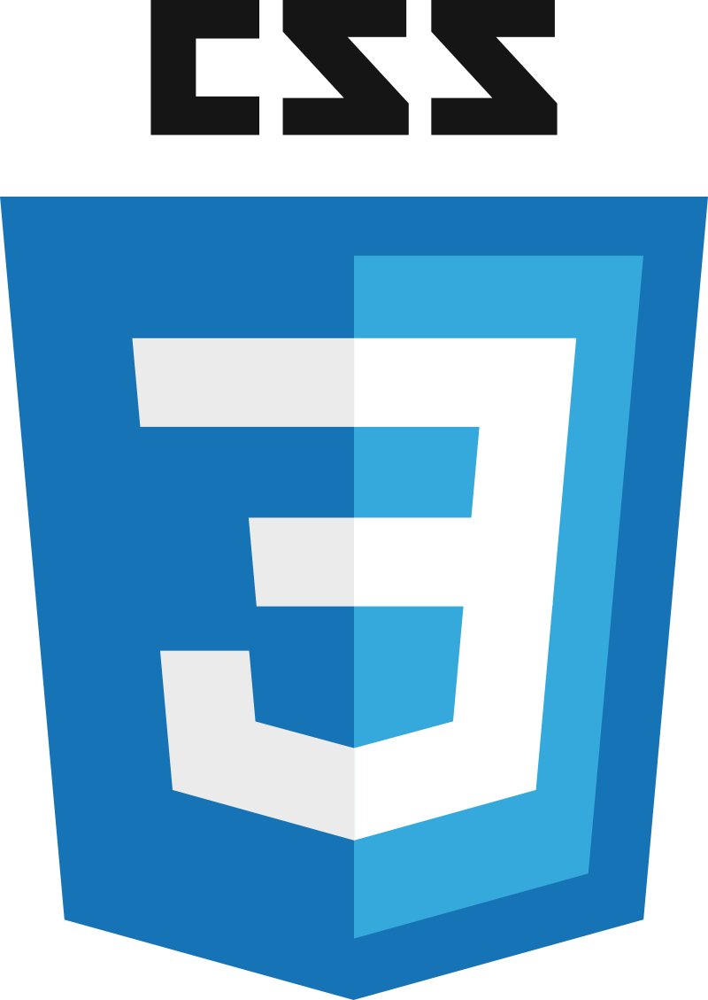
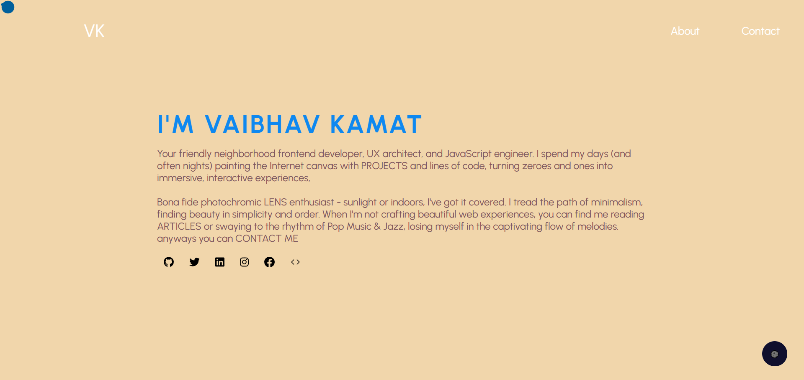
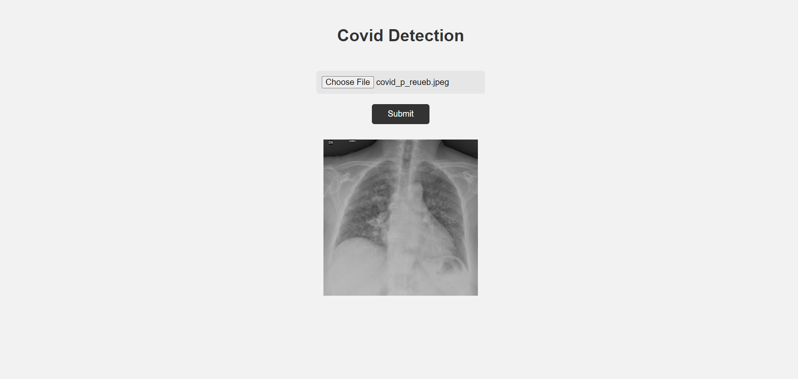
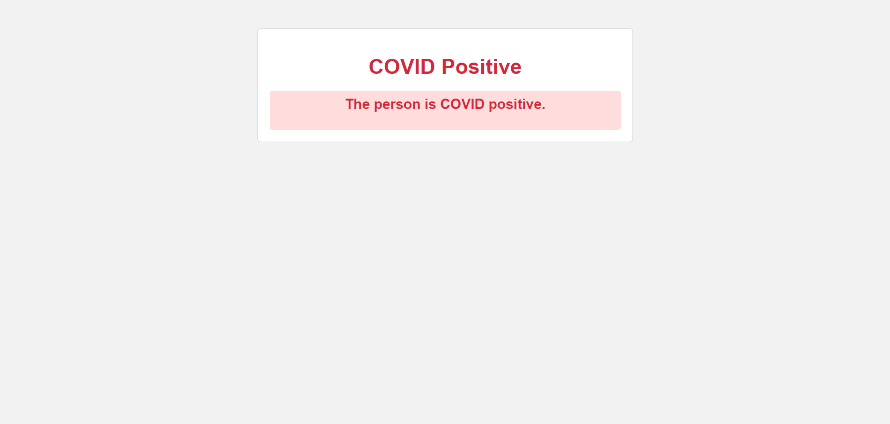
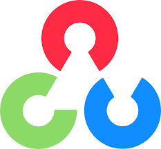
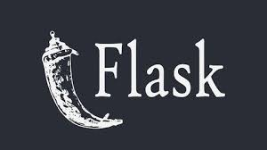

Education 📚🎓👨🏻🎓📝
Shree Rayeshwar Institute of Engineering and Information Technology, Shiroda (2019 - 2023)
Course: B.E. Computer Engineering
MES College, Vasco (PCMB)
Work Experience 🏢🌆⚒💼
Software Developer Intern at Creative Capsule Infotech, Verna
Duration: Aug 2022 to Oct 2022 (2 months)
Created a Web application to keep track of a GitHub user's public repositories and notify the user.
Created a Dashboard that shows the count of total GitHub accounts added in the system and the total count of public repositories.
Created an Email notification system that notifies the users in the notification list via email about any new public repository added by the GitHub user registered in the system.
Technologies Used: ReactJS, HTML, CSS, JavaScript, NodeJS, ExpressJS, NestJS, PostgreSQL, Git, GitHub, VS Code, Postman

Skills 💡🧠🛠👨🏾💻
Programming Languages:


Web Development:
 



Tools:


Operating Systems:


Others:

Projects 🚀🗂️☢️
-
Portfolio Website
A personal website for myself
Tech used:

-
Covid19 Detection Using Federated Learning
Collaborative Federated Learning Approach allowing multiple edge devices to screen Covid19 from X-rays using deep learning without sharing patients' private data. Technology used: Tensorflow, Flower Framework, OpenCv, and Flask for the web app.
 Tech used:


-
College Event Website
A website for a college event (TECH TWISTER 2023). Built using HTML, CSS, and JavaScript. Hosted on Netlify.
.png)
Tech used:
Hobbies
- Music - I love listening to music. I listen to all kinds of music, depending on the mood.
- Football - I love playing and watching football. I am a huge fan of Tottenham Hotspur Football Club.
- Cubing - My record for solving a Rubik's cube is 40 seconds. I average about 1 minute max.
- Video Games - Why not?